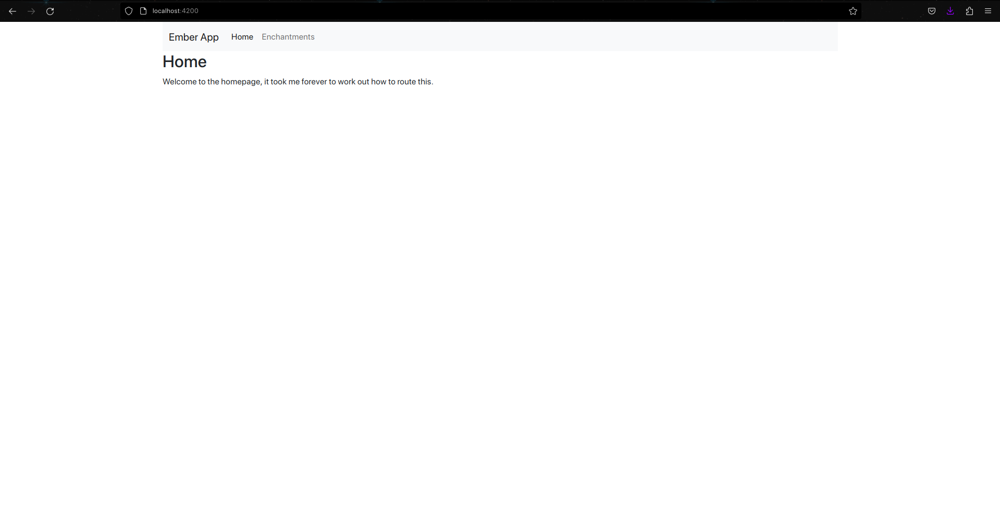
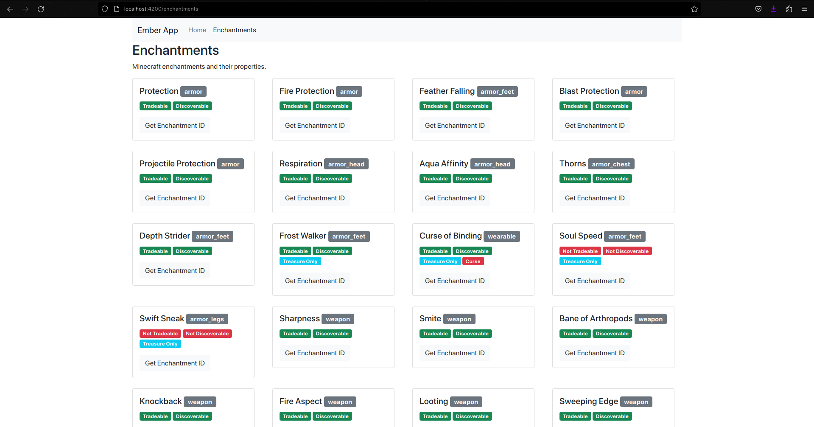

Ember
Introduction
EmberJS was created by Yehuda Katz, a member of the Rust Core Team, however, he lists himself as a co-creator of Ember on his own site (Katz, 2015). The framework uses Handlebars as its templating engine, which Katz also created (Katz, 2015).
How it works
The entry point for this is index.html, however, you can't see where the base template is injected. The body receives a class of ember-application by default, but it is added to it somewhere that I couldn't find. application.hbs is the base template, yet there is no reference to where it will be inserted.
Ember uses a virtual DOM, which is good because they are more efficient than regular DOMs. This is because unlike regular DOMs, they clone the current DOM, make all the changes and then compare the two and only makes the changes where they differ.
Templates that are routed are placed after/inside of application.hbs. If you would like to create a template for the home page to display after the application.hbs, it has to be called index, which isn't mentioned anywhere, and you aren't shown a way to automatically populate the navbar with the templates.
Figure 4
Ember Logo

(Ember.js, n.d.).
Strengths and Weaknesses
Strengths
-
Use the CLI to generate routes
-
You can use JavaScript or TypeScript
Weaknesses
-
Confusing injection of the base template.
-
Jargon is confusing, inconsistent and not well explained.
-
Tutorials don't teach you useful concepts and don't explain what the code is doing.
-
Documentation is hard to navigate.
Example Web App
Learning Ember was probably the most difficult of the frameworks I have tried so far. The documentation is not very good, and the jargon is confusing and inconsistent. I found it difficult to find a good example of the router setup, and the documentation for the router was not very helpful. I made a website with Ember that was similar to the first tutorial they offer, generating content for each item in an array. Instead of using a string array of two scientists, I used a JSON file I found on the internet that contained a list of all the enchantments in Minecraft. I followed the tutorial to create a dynamic alert linked to a button click event. To keep the site consistent with the others I've tested, I added a router that has a navigation bar that stays at the top of every page.
The code example below is of the base template (application.hbs), the template for the enchantments view, and the enchantment list module. The enchantments view is placed under the outlet handlebar tag, and the enchantment-list module (which has to be named in kebab case, but referenced in pascal case) is referenced in the enchantment view, with data passed in from the view's JavaScript file. The enchantment-list module's JavaScript file also has a method that displays an alert with parameters inserted.
Gallery
The Home Page
The Minecraft Enchantments page
